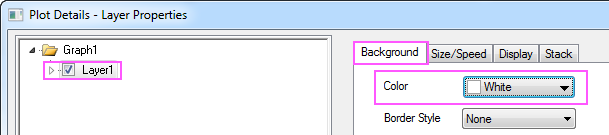

|
Wenn Sie den Beschriftungstext zeigen möchten, können Sie <Auto>, <Wert wie eingegeben> oder Ihre eigene Zeichenkette eingeben. Weitere Informationen finden Sie unter Die Registerkarte Referenzlinien, Beschriftungstext.
Anzeige des Diagramms benutzerdefiniert anpassen
- Klicken Sie auf das Symbol Graph1 im linken Bedienfeld (achten Sie darauf, das Kontrollkästchen daneben nicht zu deaktivieren) und setzen Sie auf der Registerkarte Anzeige die Farbe auf Cyan dunkel. Klicken Sie auf das Symbol für Layer1 und setzen Sie die Farbe auf der Registerkarte Hintergrund auf Weiß. Deaktivieren Sie das Kontrollkästchen Daten über den Achsen und aktivieren Sie das Kontrollkästchen Rahmen auf der Registerkarte Anzeige. Klicken Sie auf OK, um den Dialog zu schließen.
- 
- Klicken Sie doppelt auf die X-Achse, um den Dialog Achsen zu öffnen. Klicken Sie auf die Registerkarte Beschriftung der Hilfsstriche und wählen Sie auf der Seite Anzeige die Option 2016 in der Auswahlliste Anzeige.
- Gehen Sie zur Seite Format und setzen Sie Drehen (Grad) auf 90, so dass alle Hilfsstrichsbeschriftungen um 90 Grad gedreht werden. Klicken Sie auf Anwenden, um die Einstellungen anzuwenden.
- Gehen Sie zur Registerkarte Skalierung, um die Skalierung der X-Achse wie unten festzulegen:
- Gehen Sie zur Registerkarte Titel und ändern Sie den Inhalt im Feld Text in Year, um den Titel der X-Achse zu modifizieren.
- Markieren Sie das Symbol Links im linken Bedienfeld und ändern Sie den Titel der Y-Achse in (Index 2002 = 100). Klicken Sie auf Anwenden.
- Kehren Sie zur Registerkarte Skalierung zurück und wählen Sie dieses Mal das Symbol Vertikal aus, so dass die Registerkarte Skalierung der Y-Achse verwendet wird. Setzen Sie den Wert für Von auf 0. Klicken Sie auf die Schaltfläche Anwenden.
- Wechseln Sie zur Registerkarte Gitternetze und zeigen Sie die Hauptgitternetzlinien in Hellgrau an, den untenstehenden Einstellungen folgend:
- Klicken Sie auf OK, um diese Einstellungen anzuwenden und den Dialog Achsen zu schließen.
- Gehen Sie zurück zum Diagramm und löschen Sie die Legende. Klicken Sie mit der rechten Maustaste auf den Layer, wählen Sie Layertitel hinzufügen/modifizieren und geben Sie den gewünschten Titel ein. Geben Sie Industrial Production: Durable Consumer Goods (IPDCONGD) in das Textfeld ein. Markieren Sie den Text und klicken Sie auf die Schaltfläche
 auf der Symbolleiste Format. Passen Sie den Text hinsichtlich einer geeigneten Größe an, indem Sie eine Zahl eingeben oder in der Liste Schriftgröße auf der Symbolleiste Format. Passen Sie den Text hinsichtlich einer geeigneten Größe an, indem Sie eine Zahl eingeben oder in der Liste Schriftgröße  auf der Symbolleiste Format auswählen. Das sich ergebende Diagramm sollte folgendermaßen aussehen. auf der Symbolleiste Format auswählen. Das sich ergebende Diagramm sollte folgendermaßen aussehen.
|